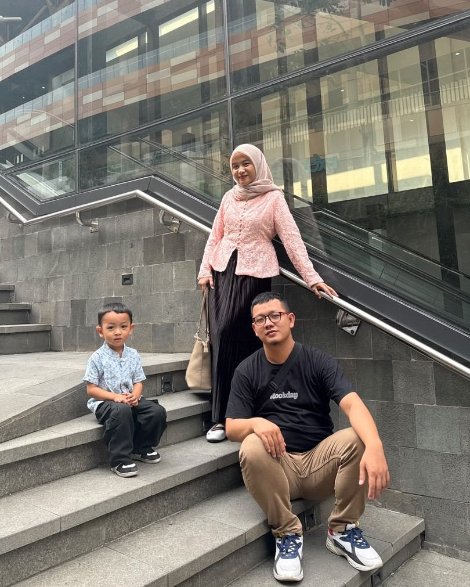

Annisa Yuniar Yasmin
Ibu hebat dari Muhammad Dzikri Al Faqih
Terima kasih telah membersamai dan selalu setia di kala susah maupun senang.

Surat Cinta untuk Istriku Tercinta
Dari suamimu tercinta, Rizky Novikusyandi Pratama
Istriku sholihah, Annisa Yuniar Yasmin, ibunda tercinta dari buah hati kita Muhammad Dzikri Al Faqih. Di setiap helaan napas dan sujudku, aku selalu menyisipkan rasa syukur yang mendalam kepada Allah SWT karena telah menghadirkanmu sebagai pendamping hidupku dan ibu yang luar biasa bagi anak kita. Terima kasih karena kamu telah dengan tulus ikhlas membersamiku, baik di kala suka kita tertawa bersama, maupun terkhusus di saat-saat tersulit dalam hidup kita.
"Jujur, kalau kita melihat kenyataan hari ini, aku tahu perjalanan kita masih panjang dan saat ini pun kita masih menghadapi banyak 'susahnya'—banyak ujian, keterbatasan, perjuangan ekonomi, dan lelah yang harus kita pikul bersama demi masa depan Dzikri."
Namun di balik segala kesusahan itu, kehadiranmulah yang membuat pundakku tidak roboh. Kesabaranmu, ketulusan senyumanmu, dan doa-doa malam yang kau panjatkan untukku dan Dzikri adalah sumber kekuatan terbesar yang membuatku terus bangkit setiap pagi. Kamu tidak pernah meninggalkan saat badai menerpa; justru tangan hangatmulah yang selalu menggenggam erat tanganku, meyakinkanku bahwa kita pasti bisa melaluinya.
Terima kasih, Annisa, atas kesetiaan dan ketegaran hatimu membersamiku di saat susah ini. Aku berjanji di hadapan Allah, aku akan terus berjuang sekuat tenaga, membanting tulang, dan membersamimu hingga kelak kesulitan ini berganti menjadi kebahagiaan yang lapang, berkah, dan penuh tawa dalam keluarga kecil kita.
Kupon Cinta Khusus Untukmu
Klik setiap kartu di bawah ini untuk melihat kupon spesial yang bisa kamu klaim kapan saja dari suamimu!
Kupon Pundak Bersandar
Penawar lelah di saat hari terasa begitu berat dan penat...
Kupon Pendengar Setia
Hak istimewa untuk mencurahkan isi hati tanpa interupsi...
Kupon Doa di Setiap Sujud
Senjata terkuat kita agar Allah mudahkan setiap langkah perjuangan...
Kenapa Aku Begitu Bersyukur Memilikimu?
Meskipun saat ini ujian dan kesusahan masih ada, tiga hal inilah yang membuatku bertahan dan optimis:
Kesetiaan & Keikhlasan
Kamu tetap berdiri tegar di sampingku walau kondisi ekonomi dan hidup penuh tantangan.
Ibu Hebat untuk Dzikri
Ketulusanmu mendidik Muhammad Dzikri Al Faqih adalah kebanggaan terbesar dalam hidupku.
Harapan Masa Depan
Aku yakin badai ini sementara, dan Allah sedang menyiapkan kebahagiaan besar untuk keluarga kita.
Dibuat dengan sepenuh hati oleh Rizky Novikusyandi Pratama untuk istri tercinta Annisa Yuniar Yasmin (Ibunda Muhammad Dzikri Al Faqih).